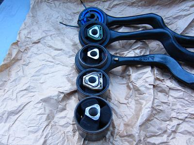
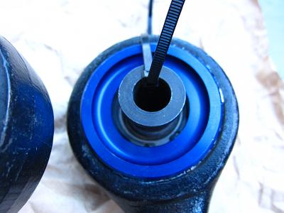
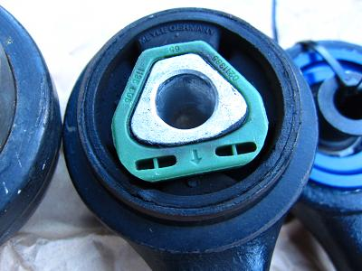
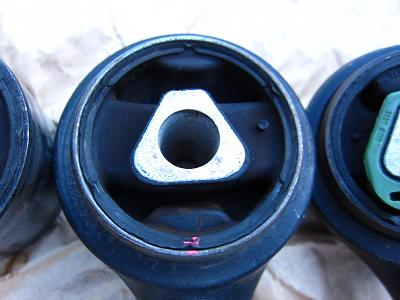
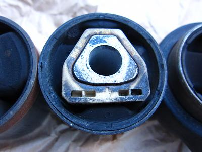
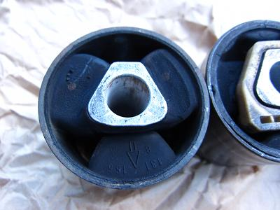
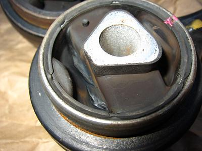
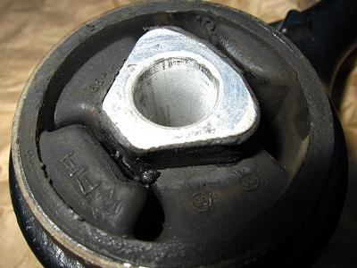
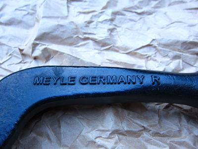
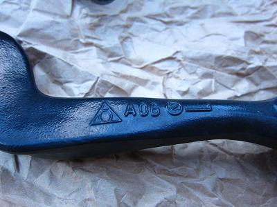

 これまでに試してきたスラストブッシュたち。 上から １）Power Station ピロボール ２）MEYLE E32 750i用（強化品） ３）Taiwan Golden Quality ４）BOGE （BMW純正品） ５）Lemföder M5用（OEM品） この他にHAMBURG TECHNICの物も使ったが、処分してしまった。 次からは、各ブッシュの詳細を見ていこう。
|
 １）Power Station ピロボール ちょうどブッシュが交換時期の頃、今は無きPowerStationでピロボールを装着した635csiに試乗させてもらった。 カッチリしたハンドリング、ブレーキを強く踏んでもビクともしない足回りに心を奪われ装着することに。 ゴムブッシュに見られる余分な遊びも無く、ダイレクト感のあるハンドリングだった。 しかし、ハンドルセンターがあまり落ち着かず、轍に良くハンドルを取られた。 いつ頃だったか、コレを入れてから急速にボディーが「ミシッ」と軋むようになった。 ピロボールの状態は良好だったが、10000kmくらいでゴムブッシュに戻す。 これは街乗りでは必要ないように思う。
|
 ２）MEYLE 750i用（強化品） 良くオークションなどでも見かけるMEYLE製だ。E34に流用すると、強化品になるやつだ。 乗り心地はゴムブッシュの中では一番硬く（突き上げ感が多い）感じた。 最初は、強化品＝硬い＝ハンドリング向上^^! くらいに思っていたが、何か違和感・・・ 重量のある７５０用だけあって、３４ではあまりブッシュが動いていないような感じも受けた。 これは20000kmくらい持った。 アームのピロボールはこの時点でもまだ硬く良好だった。 ハンドリングや価格もそこそこに持ちの良い物ならMEYLEだろう。
|
 ３）Taiwan Golden Quality どこにもレビューが無く、激安だったし、気になって使ってみることに。 購入した時から、プラスチックのストッパーが付いていなかった。 単なるコストダウンなのか、必要ないから付いていないのか・・・？ ブッシュの中ではこれが最安値の１個15ドル 日本円でおおよそ1200円！だった（笑 走り出してみると、ストッパーが無い分ゴムが自由に動いている感触がハンドルに伝わってくる。 橋のつなぎ目や段差を乗り越えると、まるでサスペンションが抜けたかのようにタイヤが暴れる・・・ Ｍゴロー号は18インチを履いているので、純正の15インチだと大丈夫なのかもしれないが、18インチでは抑えきれないようだ。 タイヤが暴れる感じに耐え切れず、3000kmで交換（笑
|
 ４）BOGE （BMW純正品） BMW純正 525iや535i用のブッシュだ。 新車時からついていたもので140000kmまで使っていた。そのほとんどの期間が15インチだったからこそ持ったのだろう。 今はコレと同じ物を装着しているが、上記の1) 2) 3)よりもフラット感が良く、高速道路ではまさに“オンザレール”を味わえる。 ハンドリングもこの年代の車に見られる良い意味での“ダルさ”が出て好感が持てる。 あとは、どれくらい持ってくれるのかが気になるところだ。現在8000kmくらい走ったが、まだ変化は無い。 また、寿命が来たら追記しよう。
|
 ５）Lemföder Ｍ５用（OEM品） ハンドリングも乗り心地もこのブッシュが１番良く、凸凹でも終始フラットで嫌な突き上げが一番少なかった。 上下にブッシュが動いてしっかり路面をつかむ感じが良く分かる。 装着した時に、試乗に高速道路を１区間だけのつもりで乗ったのだが、気が付けば１区間どころか100kmも走っていたことがあった（笑 それくらい気持ち良く、どこまででも行きたくなるようなハンドリングだった。 しかし寿命が短く、Ｍゴローの場合9000kmしか持たなかった。 もう少し寿命が長ければ、これがベストだ。 定期的に１G状態でボルトを締め直せば、もう少し寿命を向上させることができるのかもしれない。
|
 Taiwan Golden Qualityの拡大写真 タイヤが前後に動いていたであろう痕跡が残っていた。 ブッシュ自体の形状はBOGE製 525/535用とほとんど同じだった。 価格が安いので、次はダメになったブッシュからストッパーを外してきて試してみよう！と思う・・・
|
 MEYLE（E32)のブッシュから緑色のストッパーを外した写真だ。 E34の物と比べて、入力を受け止めるゴムブロックが大きくなっている。 この辺りが強化になるのだろう。
|
  アームに関しては、FebiかMEYLEが良さそうだ。 この２つのメーカーの物はグリスもしっかり充填されていたし、ピロボール部分の持ちも良かった。 純正はLemföderなので、OEM品を取り寄せてみたが、ピロボール部分が弱く持ちが良くなかった。 ゴムブッシュ１つでここまで楽しめる車はなかなか無いだろう（笑 あの絶妙なバランスを保つには、硬すぎても柔らかすぎても良くないことが分かった。 純正部品はやっぱり良く考えられている。 ここのブッシュは、高くてもその車両に合った純正品かOEMを選ぶことで気持ちよく乗れそうだ。 この他に、変なメーカーのブッシュをご存知なら是非タレこんでいただきたい（笑 →メール 2013/6/22追記 このブッシュを如何にして長持ちさせるかいうことと、轍にハンドルを取られないようにするために試していたことがあった。 ２年間に渡って試した結果を書こうと思う。 インチアップすると、タイヤは扁平が小さくなり、幅は太くなってしまう。 純正のタイヤサイズだと 225/60/15 だ。 18インチにインチアップするとなると、235/40/18が一般的だ。 フロント足回りにシビアなE34は225→235への変更で、本来のハンドリングが損なわれているように感じていた。 アライメントをしっかり取り、タイヤが新しくても235だと轍でハンドルを取られやすいし、ブッシュの痛みは早いし。。 かといって、225の60扁平のタイヤでは高速コーナーは怖いし、もう少し大きいホイールを履きたい。 そんなことから、本来のハンドリングを損なわず、ブッシュを長持ちさせる方法を模索していた。 そこで、フロントタイヤを235/40/18から225/45/18へとサイズダウンした。 ハンドリングを比較するため、同じ銘柄のタイヤを使用した。 すると、今までと比べ物にならないくらい轍でもハンドルが取られない。さらに乗り心地も良い。 タイヤを225にしてから、ブッシュは12000kmくらい走行したが変化は無い。ブッシュの痛み具合はもう少し様子を見ようと思う。 タイヤ外径を調べてみると、同じサイズでも各メーカーで±3mm程度の差があるようだ。 純正サイズ 225/60/15・・・外径651mm 今までのサイズ 235/40/18・・・外径645mm 今回のサイズ 225/45/18・・・外形660mm 現在履いているタイヤは外径が660mmで純正よりも少し大きくなるが、干渉することなく収まっている。 ほんのわずかなサイズの違いだが、体感できる効果は大きい。 18インチでタイヤを交換する機会があれば、225/45/18も候補に入れてみて下さい。乗りやすくなります。 Ｍゴローの思うE34にベストなホイールとタイヤは、フロント8J リヤ9J オフセット＋20に 225/45/18 245/40/18の組み合わせ。 これでフィーリングも見た目も両立できるはずだ。
|